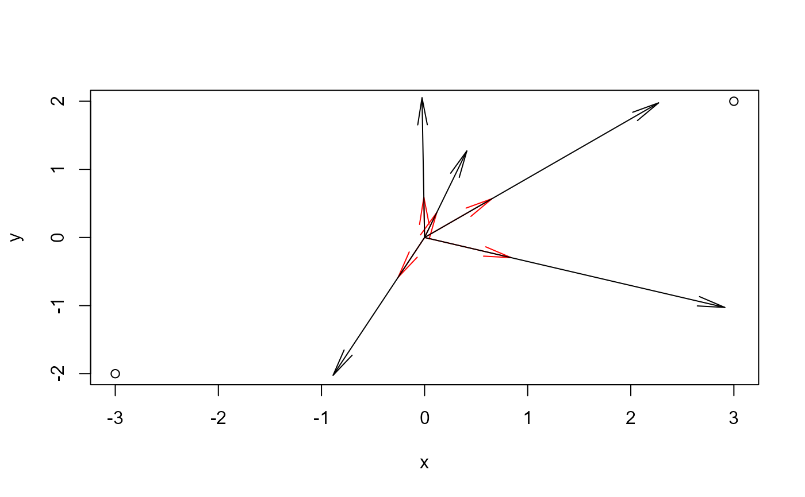

Calculates a scale factor so that a collection of vectors nearly fills the current plot, that is, the longest vector does not extend beyond the plot region.
Arguments
- vectors
a two-column matrix giving the end points of a collection of vectors
- bbox
the bounding box of the containing plot region within which the vectors are to be plotted. The default is the bounding box of the current plot window, obtained from
par("usr").- origin
origin of the vectors. Defaults to (0, 0).
- factor
maximum length of the rescaled vectors relative to the maximum possible
Details
This function is used in, e.g., vectors() to draw labeled vectors in a dimension-reduction plot.
The scaling calculated here doesn't directly calculate space for the labels to fit within the plot regions. The factor argument
can provide for that, shrinking the vectors by that factor.
Examples
bbox <- matrix(c(-3, 3, -2, 2), 2, 2)
colnames(bbox) <- c("x","y")
rownames(bbox) <- c("min", "max")
bbox
#> x y
#> min -3 -2
#> max 3 2
vecs <- matrix( runif(10, -1, 1), 5, 2)
plot(bbox)
arrows(0, 0, vecs[,1], vecs[,2], angle=10, col="red")
(s <- vecscale(vecs))
#> [1] 3.106133
arrows(0, 0, s*vecs[,1], s*vecs[,2], angle=10)
